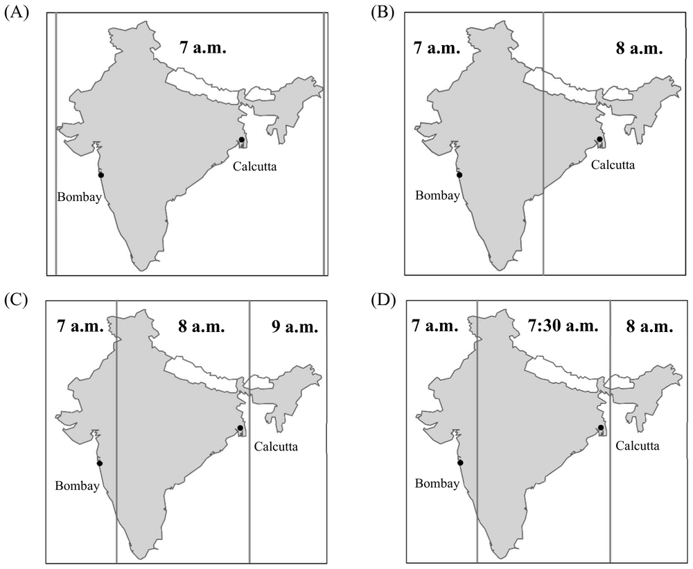
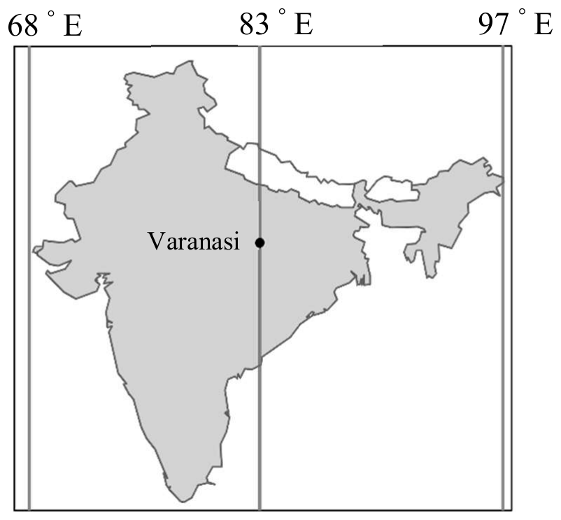

先讀文章、作答下方的題目，再展開最後的「看答案、依據句與逐段中譯」。也可以到互動練習線上作答，交卷後自動批改。
第 1 段For decades, India’s time zone has been a hotly debated issue. Back in 1884 when time zones were officially established, two time zones were used—Bombay Time and Calcutta Time. Indian Standard Time (IST) was introduced in 1906, but Calcutta Time and Bombay Time continued to be maintained after India’s independence in 1947, until 1948 and 1955 respectively. The current single time zone, though a legacy of British rule, is often viewed as a symbol of unity. Yet, not everyone thinks it is a good idea.
第 2 段India stretches 3,000 km from east to west, spanning roughly 30 degrees longitude. This corresponds to a two-hour difference in mean solar time, based on the position of the sun in the sky. Thus, the sun rises nearly two hours earlier in the east than in India’s far west. In Northeastern states, sunrise can be as early as 4 a.m. in summer and sunset by 4 p.m. in winter, much earlier than the official working hours. This results in great loss of daylight hours and more consumption of electricity, and often reduced productivity.
第 3 段Meanwhile, recent studies point out that the current system leads to a serious problem in education for some students. Nationwide, the school day starts at roughly the same time; thus, children go to bed later and have reduced sleep in west India, where the sun sets later. Such sunset-induced sleep deprivation is more pronounced among the poor, mostly due to their noisy environment and lack of sleep-inducing facilities like window shades or indoor beds. On average, an hour’s delay in sunset time reduces children’s sleep by 30 minutes, and an hour’s delay in annual average sunset time reduces education by about 0.8 years. As a result, children living in locations with later sunsets are less likely to complete primary and middle school education.
第 4 段Despite various requests and proposals for multiple time zones, the government is keen to retain the current system. Reasons provided include prevention of confusion and safety issues regarding railway and flight operations.
43.Which of the following illustrates the Indian time zone system since 1955?

44.Which of the following is closest in meaning to the word “pronounced” in the third paragraph?
45.According to the passage, which of the following is a supporting argument for multiple time zones?
46.According to the passage, when is most likely the sunset hour in December in the city of Varanasi shown on the map?

| 題號 | 官方答案 | 答對率 | 鑑別度 |
|---|---|---|---|
| 43 | (A) | — | — |
| 44 | (A) | — | — |
| 45 | (B) | — | — |
| 46 | (C) | — | — |
答對率：本卷非正式施測，無答對率
第 1 段Indian Standard Time (IST) was introduced in 1906, but Calcutta Time and Bombay Time continued to be maintained after India’s independence in 1947, until 1948 and 1955 respectively.
第 1 段The current single time zone, though a legacy of British rule, is often viewed as a symbol of unity.
第 3 段Meanwhile, recent studies point out that the current system leads to a serious problem in education for some students.
第 3 段Such sunset-induced sleep deprivation is more pronounced among the poor, mostly due to their noisy environment and lack of sleep-inducing facilities like window shades or indoor beds.
第 3 段On average, an hour’s delay in sunset time reduces children’s sleep by 30 minutes, and an hour’s delay in annual average sunset time reduces education by about 0.8 years.
第 3 段As a result, children living in locations with later sunsets are less likely to complete primary and middle school education.
第 2 段Thus, the sun rises nearly two hours earlier in the east than in India’s far west.
第 2 段In Northeastern states, sunrise can be as early as 4 a.m. in summer and sunset by 4 p.m. in winter, much earlier than the official working hours.
第 1 段數十年來，印度的時區一直是爭論激烈的議題。早在 1884 年正式劃定時區的時候，印度使用兩個時區：孟買時間和加爾各答時間。1906 年開始實施印度標準時間（IST），不過 1947 年印度獨立之後，加爾各答時間和孟買時間仍然繼續使用，分別到 1948 年和 1955 年才停用。目前的單一時區雖然是英國統治留下來的制度，卻常常有人把它看成國家團結的象徵。然而，並不是每個人都認為這是好主意。
第 2 段印度東西綿延 3,000 公里，橫跨大約 30 度經度，換算成依太陽在天空中的位置計算的平均太陽時，相差兩個小時。因此，東部的日出比最西部早將近兩個小時。在東北各邦，夏天的日出可能早在清晨 4 點，冬天的日落則在下午 4 點，都比官方的上班時間早得多。結果造成大量日照時間浪費、用電量增加，生產力也常常因此降低。
第 3 段同時，最近的研究指出，現行制度讓部分學生的教育出現嚴重的問題。全國各地學校的上課時間大致相同，因此在日落比較晚的印度西部，孩子上床的時間比較晚，睡眠也比較少。這種日落造成的睡眠不足，在窮人家庭更加明顯，主要是因為他們的環境吵雜，又缺少窗簾或室內床鋪這類幫助入睡的設施。平均來說，日落時間晚一小時，孩子的睡眠就減少 30 分鐘；每年平均日落時間晚一小時，受教育的年數就減少大約 0.8 年。結果，住在日落較晚地區的孩子，比較不容易完成小學和國中教育。
第 4 段儘管有各種要求和提議改用多個時區，政府仍然堅持維持現行制度，提出的理由包括避免混亂，以及鐵路和航班營運的安全問題。
第 1 段For decades, India’s time zone has been a hotly debated issue.
第 2 段This results in great loss of daylight hours and more consumption of electricity, and often reduced productivity.
第 3 段Meanwhile, recent studies point out that the current system leads to a serious problem in education for some students.
第 4 段Despite various requests and proposals for multiple time zones, the government is keen to retain the current system.